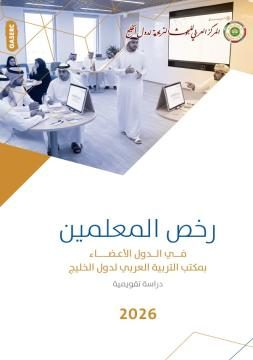
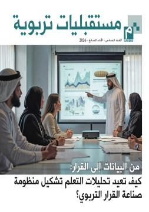
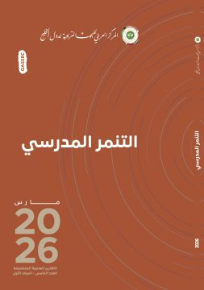
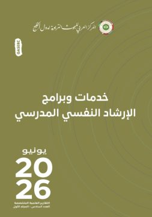

جائزة المعلم الخليجي للبحوث الإجرائية
جائزة يقدّمها المركز للمعلمين في الدول الأعضاء. الشروط ودليل التقديم في صفحة الجائزة.
آخر موعد 31 أكتوبر 2026 · باقٍ 13 يوماً
قدّم الآنمرّر على الرفّ لترى الإصدار، أو ابحث بالعنوان والموضوع والسنة.




184 إصداراً: 127 دراسة · 44 عدداً من المجلة · 8 تقارير · 5 معاجم. وأوراق المؤتمرات في الوقائع.
جائزة يقدّمها المركز للمعلمين في الدول الأعضاء. الشروط ودليل التقديم في صفحة الجائزة.
آخر موعد 31 أكتوبر 2026 · باقٍ 13 يوماً
قدّم الآنلا توجد فرص مفتوحة حالياً. تختفي الفرص تلقائياً بعد انتهاء موعدها.
لا توجد مناقصات أو دعوات أخرى مفتوحة الآن.